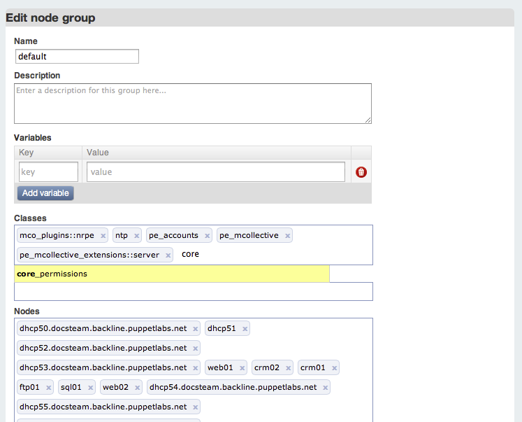
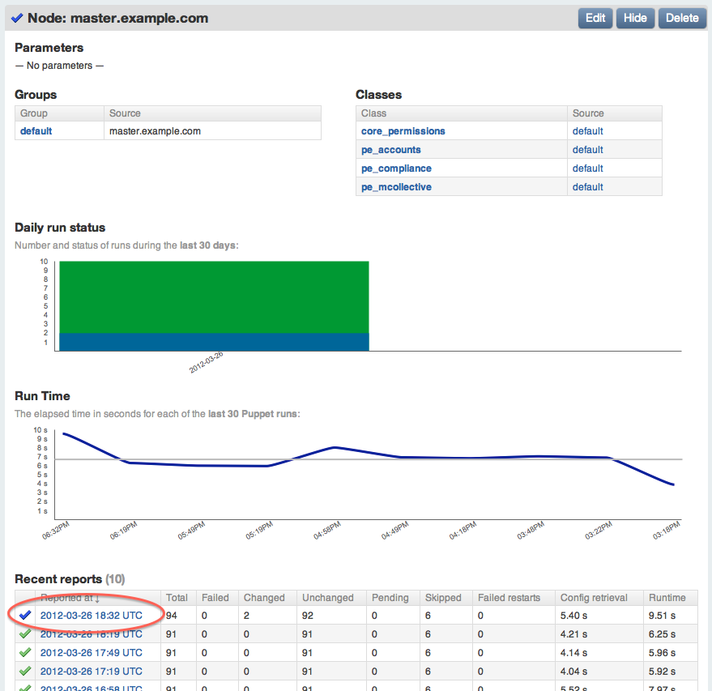
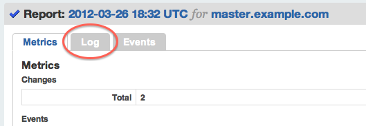
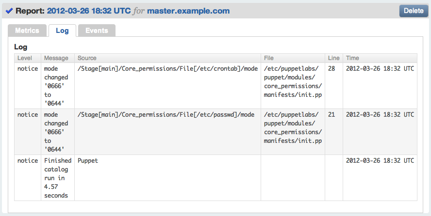

Module Writing Basics
Welcome to the PE 3.0 advanced quick start guide. This document is a continuation of the quick start guide, and is a short walkthrough to help you become more familiar with PE’s features. Follow along to learn how to:
- Modify modules obtained from the Forge
- Write your own Puppet module
- Examine reports in the console
- Create a site module that composes other modules into machine roles
- Apply Puppet classes to groups with the console
Before starting this walkthrough, you should have completed the previous quick start guide. You should still be logged in as root or administrator on your nodes.
Editing a Forge Module
Although many Forge modules are exact solutions that fit your site, many more are almost what you need. Most users will edit many of their Forge modules.
Module Basics
Modules are stored in /etc/puppetlabs/puppet/modules. (This can be configured with the modulepath setting in puppet.conf.)
Modules are directory trees. Their basic structure looks like this:
motd/(the module name)manifests/init.pp(contains themotdclass)public.pp(contains themotd::publicclass)
Every manifest (.pp) file contains a single class. File names map to class names in a predictable way: init.pp will contain a class with the same name as the module, <NAME>.pp will contain a class called <MODULE NAME>::<NAME>, and <NAME>/<OTHER NAME>.pp will contain <MODULE NAME>::<NAME>::<OTHER NAME>.
Many modules contain directories other than manifests; these will not be covered in this guide.
- For more on how modules work, see Module Fundamentals in the Puppet documentation.
- For a more detailed guided tour, see the module chapters of Learning Puppet.
Editing a Manifest
This exercise will modify the desktop shortcut being managed on your Windows node.
- On the puppet master, navigate to the modules directory by running
cd /etc/puppetlabs/puppet/modules. - Run
lsto view the currently installed modules; note thatmotdandwin_desktop_shortcutare present. - Open and begin editing
win_desktop_shortcut/manifests/init.pp, using the text editor of your choice.- If you do not have a preferred Unix text editor, run
nano win_desktop_shortcut/manifests/init.pp.- If Nano is not installed, run
puppet resource package nano ensure=installedto install it from your OS’s package repositories.
- If Nano is not installed, run
- If you do not have a preferred Unix text editor, run
- Note that the desktop shortcut is being managed as a
fileresource, and its content is being set with thecontentattribute:
class win_desktop_shortcut {
if $osfamily == "windows" {
if $win_common_desktop_directory {
file { "${win_common_desktop_directory}\\PuppetLabs.URL":
ensure => present,
content => "[InternetShortcut]\nURL=http://puppetlabs.com",
}
}
}
}
For more on resource declarations, see the manifests chapter of Learning Puppet or the resources page of the language reference. For more about how file paths with backslashes work in manifests for Windows, see the page on writing manifests for Windows.
- Change the
ensureattribute of thefileresource toabsent. - Delete the
contentline of thefileresource. - Create two new
fileresources to manage other files on the desktop, mimicking the structure of the first resource:
file { "${win_common_desktop_directory}\\RunningPuppet.URL":
ensure => present,
content => "[InternetShortcut]\nURL=http://docs.puppetlabs.com/windows/running.html",
}
file { "${win_common_desktop_directory}\\Readme.txt":
ensure => present,
content => "This node is managed by Puppet. Some files and services cannot be edited locally; contact your sysadmin for details.",
}
Make sure that these resources are within the two “if” blocks, alongside the first resource.
- Save and close the file.
- On the console, invoke the “runonce” action on the Windows node.
- Note that the original shortcut is gone, and a new shortcut and
Readme.txtfile have appeared on the desktop.
Your copy of the Windows example module now behaves differently.
If you had deleted the original resource instead of setting
ensuretoabsent,it would have become a normal, unmanaged file — Puppet would not have deleted it, but it also would not have restored it if a local user were to delete it. Puppet does not care about resources that are not declared.
Editing a Template
- On the puppet master, navigate to the modules directory by running
cd /etc/puppetlabs/puppet/modules. - Open and begin editing
motd/manifests/init.pp, using the text editor of your choice. - Note that the content of the
motdfile is being filled with thetemplatefunction, referring to a template within the module:
class motd {
if $kernel == "Linux" {
file { '/etc/motd':
ensure => file,
backup => false,
content => template("motd/motd.erb"),
}
}
}
- Close the manifest file, then open and begin editing
motd/templates/motd.erb. - Add the line
Welcome to <%= hostname %>at the beginning of the template file. - Save and close the file.
- Use the console to invoke the “runonce” action on the Agent. Then, go to the agent node and log out and back in again.
- Note that the message of the day has changed to show the machine’s hostname.
Your copy of the
motdmodule now behaves differently.
- For more about templates, see the templates chapter of Learning Puppet or the templates section of the Puppet documentation.
- For more about variables, including “facts” like
hostname, see the variables chapter of Learning Puppet or the variables page of the language reference.
Writing a Puppet Module
Third-party modules save time, but most users will also write their own modules.
Writing a Class in a Module
This exercise will create a class that manages the permissions of the fstab, passwd, and crontab files.
- Run
mkdir -p core_permissions/manifeststo create the module directory and manifests directory. - Use your text editor to create and begin editing the
core_permissions/manifests/init.ppfile. - Edit the init.pp file so it contains the following, then save it and exit the editor:
class core_permissions {
if $osfamily != 'windows' {
$rootgroup = $operatingsystem ? {
'Solaris' => 'wheel',
default => 'root',
}
$fstab = $operatingsystem ? {
'Solaris' => '/etc/vfstab',
default => '/etc/fstab',
}
file {'fstab':
path => $fstab,
ensure => present,
mode => 0644,
owner => 'root',
group => "$rootgroup",
}
file {'/etc/passwd':
ensure => present,
mode => 0644,
owner => 'root',
group => "$rootgroup",
}
file {'/etc/crontab':
ensure => present,
mode => 0644,
owner => 'root',
group => "$rootgroup",
}
}
}
You have created a new module containing a single class. Puppet now knows about this class, and it can be added to the console and assigned to nodes.
This new class:
- Uses an “if” conditional to only manage *nix systems.
- Uses a selector conditional and a variable to change the name of the root user’s primary group on Solaris.
- Uses three
fileresources to manage thefstab,passwd, andcrontabfiles on *nix systems. These resources do not manage the content of the files, only their ownership and permissions.
See the Puppet documentation for more information about writing classes:
- To learn how to write resource declarations, conditionals, and classes in a guided tour format, start at the beginning of Learning Puppet.
- For a complete but succinct guide to the Puppet language’s syntax, see the Puppet 3 language reference.
- For complete documentation of the available resource types, see the type reference.
- For short, printable references, see the modules cheat sheet and the core types cheat sheet.
Using a Homemade Module in the Console
- On the console, use the “add class” button to make the class available, just as in the previous example.
- Instead of assigning the class to a single node, assign it to a group. Navigate to the default group and use the edit button, then add the
core_permissionsclass to its list of classes. Do not delete the existing classes, which are necessary for configuring new nodes.

-
On the puppet master node, manually set dangerous permissions for the
crontabandpasswdfiles. This will make them editable by any unprivileged user.# chmod 0666 /etc/crontab /etc/passwd # ls -lah /etc/crontab /etc/passwd /etc/fstab -rw-rw-rw- 1 root root 255 Jan 6 2007 /etc/crontab -rw-r--r-- 1 root root 534 Aug 22 2011 /etc/fstab -rw-rw-rw- 1 root root 2.3K Mar 26 08:18 /etc/passwd -
On the first agent node, manually set dangerous permissions for the
fstabfile:# chmod 0666 /etc/fstab # ls -lah /etc/crontab /etc/passwd /etc/fstab -rw-rw-r-- 1 root root 255 Jan 6 2007 /etc/crontab -rw-rw-rw- 1 root root 534 Aug 22 2011 /etc/fstab -rw-rw-r-- 1 root root 2.3K Mar 26 08:18 /etc/passwd - Run puppet agent once on every node. You can do this by:
- Doing nothing and waiting 30 minutes
- Using live management to run the “runonce” action on the agent nodes
- Triggering a manual run on every node, with either
puppet agent --testor the “Run Puppet Agent” Start menu item (on Windows)
-
On the master and first agent nodes, note that the permissions of the three files have been returned to safe defaults, such that only root can edit them:
# ls -lah /etc/fstab /etc/passwd /etc/crontab -rw-r--r-- 1 root root 255 Jan 6 2007 /etc/crontab -rw-r--r-- 1 root root 534 Aug 22 2011 /etc/fstab -rw-r--r-- 1 root root 2.3K Mar 26 08:18 /etc/passwd - On the Windows node, note that the class has safely done nothing, and has not accidentally created any files in
C:\etc\. - On the console, navigate to
master.example.com, by clicking “Nodes” in the primary navigation bar and then clicking on the node’s name. Scroll down to the list of recent reports, and note that the most recent one is blue, signifying that changes were made:

- Click on the topmost report, then navigate to the “log” tab of the report:

- Note the two changes made to the file permissions:

You have created a new class from scratch and used it to manage the security of critical files on your *nix servers.
Instead assigning it directly to nodes, you assigned it to a group. Using node groups can save you time and allow better visibility into your site. They are also crucial for taking advantage of the cloud provisioning tools. You can create new groups in the console with the “New group” button, and add new nodes to them using the “Edit” button on a group’s page.
Using a Site Module
Many users create a “site” module. Instead of describing smaller units of a configuration, the classes in a site module describe a complete configuration for a given type of machine. For example, a site module might contain:
- A
site::basicclass, for nodes that require security management but haven’t been given a specialized role yet. - A
site::webserverclass for nodes that serve web content. - A
site::dbserverclass for nodes that provide a database server to other applications.
Site modules hide complexity so you can more easily divide labor at your site. System architects can create the site classes, and junior admins can create new machines and assign a single “role” class to them in the console. In this workflow, the console controls policy, not fine-grained implementation.
- On the puppet master, create the
/etc/puppetlabs/puppet/modules/site/manifests/basic.ppfile, and edit it to contain the following:
class site::basic {
if $osfamily == 'windows' {
include win_desktop_shortcut
}
else {
include motd
include core_permissions
}
}
This class declares other classes with the include function. Note the “if” conditional that sets different classes for different OS’s using the $osfamily fact. For more information about declaring classes, see the modules and classes chapters of Learning Puppet.
- On the console, remove all of the previous example classes from your nodes and groups, using the “edit” button in each node or group page. Be sure to leave the
pe_*classes in place. - Add the
site::basicclass to the console with the “add class” button in the sidebar. - Assign the
site::basicclass to the default group.
Your nodes are now receiving the same configurations as before, but with a simplified interface in the console. Instead of deciding which classes a new node should receive, you can decide what type of node it is and take advantage of decisions you made earlier.
Summary
You have now performed the core workflows of an intermediate Puppet user. In the course of their normal work, an intermediate user will:
- Download and modify Forge modules that almost (but not quite) fit their deployment’s needs.
- Create new modules and write new classes to manage many types of resources, including files, services, packages, user accounts, and more.
- Build and curate a site module to safely empower junior admins and simplify the decisions involved in deploying new machines.